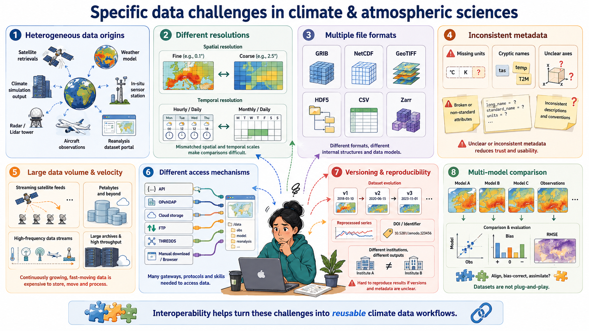

All in One View
Content from Introduction
Last updated on 2026-07-14 | Edit this page
Estimated time: 60 minutes
Overview
Questions
- Why interoperability is important when dealing with research data?
- What are the three layers of interoperability?
- How can you identify if a dataset is interoperable or not?
Objectives
- Understand why interoperability matters in climate & atmospheric science
- Recognize the 3 layers: structural, semantic, technical
- Identify interoperable vs non-interoperable datasets
What is interoperability?
From the foundational article: The FAIR Guiding Principles for scientific data management and stewardship 1
Three guiding principles for interoperability are:
- I1. (meta)data use a formal, accessible, shared, and broadly applicable language for knowledge representation.
- I2. (meta)data use vocabularies that follow FAIR principles
- I3. (meta)data include qualified references to other (meta)data
It might be a good time to survey the participants to see how many of them have:
heard of NetCDF format before (n.b., it’s a prerequisite of the workshop)
have experience working with NetCDF format.
Assessing how interoperable a dataset is
You receive a dataset containing global precipitation estimates for 2010–2020. Its characteristics are:
- Provided as an NetCDF file.
- Variables have short, cryptic names (e.g.,
prcp,lat,lon). - Metadata uses inconsistent units (some missing).
- Coordinates and grids are documented only in an accompanying PDF.
- The dataset includes a persistent identifier (DOI) and references two external datasets used for validation.
- No controlled vocabularies or community standards (e.g., CF, GCMD keywords) are used.
Based on the FAIR interoperability principles (I1–I3), how would you rate the interoperability of this dataset?
- High interoperability — it uses a widely supported file format and includes references to other datasets.
- Moderate interoperability — some technical elements exist, but semantic clarity and formal vocabularies are missing.
- Low interoperability — metadata and semantic descriptions do not meet I1–I3 requirements.
- Full interoperability — all three interoperability principles (I1, I2, I3) are clearly satisfied.
Correct answer: B or C depending on the level of strictness, but for educational clarity, choose C.
I1: Not satisfied (no formal/shared language for knowledge representation; heavy reliance on PDF documentation).
I2: Not satisfied (no controlled vocabularies, no standards).
I3: Partially satisfied (qualified references exist, but insufficient context). => Overall, interoperability is low.
Identify the three layers of interoperability
These are properties that datasets must fulfilled in order to enable interoperability with the wider research ecosystem of APIs, notebooks, online viewers, etc.
Structural interoperability = representation
Structural interoperability ensures that data is organized, stored, and encoded in predictable, machine-actionable ways. This is achieved through:
common file formats
shared data models
consistent dimension and array structures
Examples include NetCDF, Zarr, and Parquet, which define how variables, coordinates, and metadata are stored. Structural interoperability allows tools across programming languages and platforms to read data consistently.
Semantic interoperability = meaning
Semantic interoperability ensures that data carries shared, consistent meaning across institutions and tools. This is achieved through:
- standard vocabularies
- controlled terms
- variable naming conventions
- units
- coordinate definitions
Examples include Climate and Forecast (CF) standard names, attributes, and controlled vocabularies. Without semantic interoperability, datasets cannot be reliably interpreted, compared, or combined.
Technical interoperability = access
Technical interoperability ensures that data can be accessed, exchanged, and queried using standard, machine-readable mechanisms. This is achieved through:
APIs
remote access protocols
web services
cloud object storage interfaces
Examples include OPeNDAP, THREDDS and REST APIs. Technical interoperability enables automated workflows, cloud computing, and scalable analytics.
References
- European Commission (Ed.). (2004). European interoperability framework for pan-European egovernment services. Publications Office.
- European Commission. Directorate General for Research and Innovation. & EOSC Executive Board. (2021). EOSC interoperability framework: Report from the EOSC Executive Board Working Groups FAIR and Architecture. Publications Office. https://data.europa.eu/doi/10.2777/620649
Reflect back on the three guiding principles for interoperability (I1–I3)(Think-Pair-Discuss):
- I1. (meta)data use a formal, accessible, shared, and broadly applicable language for knowledge representation.
- I2. (meta)data use vocabularies that follow FAIR principles
- I3. (meta)data include qualified references to other (meta)data
Do they represent all the three layers of interoperability (structural, semantic, technical)? Explain your reasoning.
FAIR’s interoperability principles emphasize semantic interoperability, addressed by controlled vocabularies and naming conventions, while structural and technical layers are insufficiently addressed.
For a domain like climate science, structural interoperability achieved by common data models and file formats (e.g. NetCDF files) as well as technical interoperability facilitated by machine-readable mechanisms (e.g.OPeNDAP protocol) matter enormously. For this, FAIR’s three guiding principles alone is not enough to guarantee practical interoperability.
True/False or Agree/Disagree with discussion afterwards
- “As long as data are open access, they are interoperable.”
- “Metadata standards help ensure interoperability.”
- “As long as data is using an open standard format is interoperable”
F,T,F
This exercise is for discussion in Plenum nad it can serves as a good link to the next section
Why to bother to make datasets interoperable?
Interoperability is key in research, specially in climate and atmospheric sciences, because researchers routinely work with multiple heterogeneous datasets that were never originally designed to work together. By ensuring that data are described consistently, stored in predictable structures, and accessed through standard mechanisms, interoperability makes it possible to combine and reuse data efficiently across research workflows.
First, interoperability enables data reuse: when datasets follow shared metadata conventions and formats, researchers can easily understand what variables represent, how they were produced, and how they can be used in new contexts. This avoids redundant effort and saves time across research groups.
Second, interoperability enables integration across sources, for example, combining model output with satellite observations, radar measurements, in-situ sensors, and reanalysis datasets. These data sources differ in resolution, structure, access method, and semantics; without shared standards, aligning them becomes difficult or impossible.
Third, interoperability reduces friction in data pipelines. Standardized formats, consistent metadata, and machine-actionable APIs allow workflows to run smoothly without manual cleaning, renaming, or restructuring. This is especially critical when handling large, frequently updated datasets typical in climate research.
Finally, interoperability is required for automation, AI, dashboards, and multi-disciplinary science. Machine learning pipelines, automated monitoring systems, and interactive applications rely on consistent, accessible, and machine-readable data. Without interoperability, these tools break or require extensive custom engineering.
In short, interoperability is what makes the diverse, high-volume data ecosystem of climate and atmospheric science usable, scalable, and scientifically trustworthy.
Key elements of interoperable research workflows
Interoperable research workflows rely on a set of shared practices, formats, and technologies that allow data to be exchanged, understood, and reused consistently across tools and institutions. In climate and atmospheric science, these elements form the backbone of scalable, reproducible, and machine-actionable data ecosystems.
-
Community formats (NetCDF, Zarr, Parquet) provide a common structural foundation.
These formats encode data in predictable ways, with clear rules about dimensions, variables, and internal structure. NetCDF remains the dominant community standard for multidimensional geoscience data, while Zarr offers a cloud-native representation suitable for large-scale, distributed computing. Parquet complements both by providing an efficient columnar format for tabular or metadata-rich data. Using community formats ensures that tools across languages and platforms can interpret datasets consistently.
-
Standardized metadata (CF conventions) provide the semantic layer needed for meaningful interpretation.
CF conventions define variable names, units, coordinate systems, and grid attributes so that datasets from different sources “speak the same language.” This allows climate model output, satellite observations, and reanalysis products to be aligned and compared reliably.
-
Stable APIs enable technical interoperability by providing machine-readable access to data and metadata.
APIs based on HTTP and JSON allow automated workflows, programmatic data publication, and integration between repositories, processing systems, and analysis tools. A stable, well-documented API ensures that downstream services and scripts continue to function even as data collections evolve.
-
Cloud-native layouts make large datasets scalable and performant.
By storing data as independent chunks in object storage, formats such as Zarr allow parallel, lazy, and distributed access, ideal for big climate datasets, serverless workflows, and AI pipelines. This ensures that even multi-terabyte archives can be streamed efficiently without requiring full downloads.
Together, these elements work as a coordinated system: community formats provide structure, metadata provides meaning, APIs provide access, and cloud-native layouts provide scalability.
Real world barriers to data interoperability and reuse (Think-Pair-Discuss)
Think of a time when you tried to reuse a dataset that you did not produce. (5 minutes) What was the most significant barrier you encountered?
Pair discussion (5 minutes)
Share your experiences with your partner:
What specific interoperability challenges did you face (structural, semantic, technical)?
How did you try to overcome them?
Would adherence to FAIR I1–I3 principles have helped? If so, how?
Group debrief (5 minutes)
Discuss as a group:
Common obstacles
Whether these were structural, semantic, or technical
How such challenges could be prevented if data producers had designed the dataset with interoperability in mind (e.g., CF conventions, persistent identifiers, shared vocabularies, formal metadata languages)
Examples of barriers to reuse datasets might include:
Missing metadata
Non-standard units or unclear variable names
File formats you could not easily open
Access restrictions or unstable URLs
Large data volumes and inefficient download workflows
Difficulty aligning datasets from multiple institutions
Lack of documentation on coordinate systems or time conventions
Inconsistent versions or unclear provenance
This discussion sets up the motivation for the rest of the workshop: practical, hands-on methods to make interoperable data using real tools such as NetCDF, CF conventions, and OPeNDAP.
Specific data challenges in the climate & atmospheric sciences
Heterogeneous data origins: Climate research integrates satellite retrievals, weather models, climate simulations, in-situ sensors, radar, lidar, aircraft measurements, and reanalysis datasets—each with its own structure, conventions, and processing workflows.
Different spatial and temporal resolutions: Satellite images may be daily or hourly at 1 km resolution, while climate models may provide monthly or daily outputs on coarse grids; combining them requires consistent metadata and alignment.
Multiple file formats and data models: Data may come as GRIB, NetCDF, GeoTIFF, HDF5, CSV, or Zarr, each with different structural assumptions that affect processing and interpretation.
Inconsistent metadata quality: Missing units, inconsistent variable names, unclear coordinate systems, or non-standard attributes are frequent issues—making semantic interoperability a major challenge.
Large data volume and velocity: Earth observation missions (e.g., Sentinel, GOES), reanalysis products (ERA5), and high-resolution climate simulations produce terabytes to petabytes of data, making efficient, interoperable access necessary.
Different access mechanisms and services: Data are distributed across portals using APIs, OPeNDAP servers, cloud object storage, FTP, THREDDS catalogs, proprietary download tools, or manual interfaces, requiring technical interoperability to automate workflows.
Versioning and reproducibility issues: Climate datasets evolve frequently (e.g., reprocessed satellite series, new CMIP6 versions), and without stable identifiers or catalog metadata, reproducibility becomes difficult across institutions.
Need for multi-model and multi-dataset comparisons: Studies such as model evaluation, bias correction, and data assimilation depend on aligning diverse datasets that were never originally designed to work together.

Discuss with you peer:
Participants inspect a small dataset and answer:
- dataset 1: https://opendap.4tu.nl/thredds/dodsC/IDRA/2019/01/02/IDRA_2019-01-02_quicklook.nc.html
- dataset 2: https://swcarpentry.github.io/python-novice-inflammation/data/python-novice-inflammation-data.zip
- dataset 3: https://opendap.4tu.nl/thredds/dodsC/data2/uuid/9604a1b0-13b6-4f23-bd6c-bb028591307c/wind-2003.nc.html
Participants should identify whether the dataset is interoperable based on the three layers discussed (structural, semantic, technical).
dataset 1: Interoperable
- Structure: NetCDF format with clear dimensions and variables.
- Metadata: CF-compliant attributes, standard names, units.
- Access: OPeNDAP protocol for remote access.
dataset 2: Not interoperable
- Structure: CSV files with ambiguous column headers.
- Metadata: Lacks standardized metadata, unclear variable meanings.
- Access: Manual download, no API or remote access.
dataset 3: Not interoperable
- Structure: NetCDF format but missing CF compliance.
- Metadata: Inconsistent or missing units, unclear variable names.
- Access: OPeNDAP protocol
Interoperability ensures that data can be understood, combined, accessed, and reused across tools, institutions, and workflows with minimal manual intervention.
Interoperability operates at three complementary layers:structural (how data is encoded and organized),semantic (how data is described and interpreted), and technical (how data is accessed and exchanged).
The FAIR interoperability principles I1–I3 primarily address the semantic layer. They provide essential guidance on shared metadata languages, vocabularies, and references, but they do not fully cover structural and technical interoperability.
In climate and atmospheric science, all three layers are required for practical reuse. Structural standards (e.g., NetCDF, Zarr), semantic conventions (e.g., CF), and technical mechanisms (e.g., APIs, OPeNDAP, THREDDS) must work together.
Many real-world barriers to reuse datasets (unclear metadata, missing units, inconsistent coordinate systems, incompatible file formats, unstable access mechanisms) are failures of one or more interoperability layers.
Interoperable research workflows rely on established community formats, standardized metadata conventions, stable access protocols, and scalable cloud-native layouts that allow large heterogeneous datasets to be aligned, streamed, and analysed consistently.
Interoperability is essential in climate science because datasets come from diverse sources (models, satellites, sensors, reanalysis) and must be combined into integrated analyses that are reproducible and machine-actionable.
Content from Structural interoperability
Last updated on 2026-07-14 | Edit this page
Estimated time: 45 minutes
Overview
Questions
- What is structural interoperability, and what does it allow software to do?
- How do data models, file formats, schemas, conventions, and access methods differ?
- How can simple tabular formats such as CSV and TSV support reusable, machine-actionable data?
- Which structural standards are appropriate for common climate and atmospheric data types?
- What structural contract does the NetCDF data model provide?
Objectives
- Explain structural interoperability as a shared, machine-actionable agreement about how data elements are organised and related.
- Distinguish between a data model, encoding or file format, schema, community convention, and access method.
- Evaluate the structural strengths and limitations of CSV/TSV, Parquet, NetCDF, Zarr, GRIB, and GeoTIFF.
- Identify the additional information needed to make tabular data reliably reusable across tools.
- Analyse a NetCDF dataset by identifying its dimensions, coordinate variables, data variables, attributes, and data types.
What is structural interoperability?
Structural interoperability concerns the organisation and representation of data: what kinds of data objects exist, how they are encoded, and how their relationships are expressed.
A dataset is structurally interoperable when different software tools can reliably:
- open and parse it using a published specification;
- locate records, columns, arrays, variables, coordinates, and metadata;
- determine data types, shapes, dimensions, and relationships;
- distinguish data values from missing or fill values;
- validate the dataset against explicit rules; and
- transform or subset it without relying on undocumented, dataset-specific assumptions.
A useful guiding question is: Can another tool determine how the dataset is organised and process that organisation without bespoke instructions from the person who created it?
This does not mean that a machine automatically
understands the scientific meaning of every value. Structural
interoperability makes the organisation machine-actionable; semantic
interoperability addresses whether terms such as
precipitation_flux, rainfall_rate, or
DBZH are defined and interpreted consistently.
Structural interoperability is a contract, not a file extension
A file extension such as .csv, .nc,
.tif, or .zarr is only a label. Structural
interoperability depends on several related layers working together.
| Layer | Question answered | Example |
|---|---|---|
| Data model | What kinds of objects exist, and how are they related? | Rows, columns, and cells; or dimensions, arrays, coordinates, and attributes |
| Encoding or format | How is that model represented as text or bytes? | Comma-delimited text, NetCDF binary encoding, Parquet column chunks |
| Schema | Which fields or variables are expected, with which types and constraints? |
station_id is a required string;
temperature is a number |
| Convention or profile | How should a community use the model and metadata consistently? | CF Conventions for NetCDF; CSVW metadata; Cloud Optimized GeoTIFF |
| Access method | How are the bytes or logical data objects retrieved? | Local file access, HTTP, OPeNDAP, object storage, HTTP range requests |
These layers should not be treated as synonyms.
- NetCDF defines a data model and one or more encodings.
- CF Conventions add rules for describing scientific variables, coordinates, units, and grid mappings within that model.
- OPeNDAP is an access protocol that exposes remotely stored data for subsetting and retrieval.
Similarly, a CSV file defines a simple textual representation, but its structure becomes more reliable when a schema describes the columns, types, constraints, missing values, and dialect.
A useful test: can the structure be validated?
A structurally interoperable dataset should have enough explicit rules for a validator or reader to detect problems such as:
- a missing required column;
- a value with the wrong data type;
- an array whose dimensions do not match its declared shape;
- an undefined coordinate variable;
- an invalid fill value;
- inconsistent chunk metadata; or
- missing georeferencing information.
If correct interpretation depends mainly on a README, an email, or knowledge held by the original researcher, the structural contract is incomplete.
Structural interoperability is about data models, not only formats
A data model defines the logical structure that software works with. Different scientific data types require different models.
Tabular model
A table consists of rows, columns, and cells. Each row normally represents one observation or entity, and each column represents one property.
Suitable formats include:
- CSV and TSV for simple, portable tables;
- Parquet for typed, column-oriented analytical tables; and
- GeoPackage for standards-based geospatial tables, vector features, and tiles.
Multidimensional array model
A multidimensional dataset consists of arrays whose axes may represent time, latitude, longitude, height, range, ensemble member, or another dimension.
Suitable formats include:
- NetCDF for self-describing array-oriented scientific datasets;
- Zarr for chunked arrays stored across filesystems or object storage; and
- GRIB for highly standardised operational meteorological fields.
Raster model
A raster represents values on a regular grid of pixels or cells. Geospatial rasters also need a defined relationship between the grid and a coordinate reference system.
Suitable formats include:
- GeoTIFF for georeferenced raster data; and
- Cloud Optimized GeoTIFF (COG), which adds layout requirements that support efficient partial access over HTTP.
Choosing a widely recognised format that matches the underlying data model allows existing tools to reuse the data with fewer transformations. Converting a multidimensional climate cube into a flat CSV may technically preserve values, but it discards or obscures relationships among dimensions, coordinates, and variables. Conversely, storing a small two-column lookup table in NetCDF may add unnecessary complexity.
CSV and TSV: portable, but not automatically self-describing
CSV and TSV are important interoperability formats because they are
plain text and are supported by spreadsheets, databases, statistical
packages, command-line tools, and most programming languages. RFC 4180 documents a
commonly used CSV syntax and the text/csv media type, but
it does not define a complete type system, scientific metadata model, or
table schema.
For example:
station_id,timestamp,air_temperature
NL001,2026-07-13T12:00:00Z,18.4
NL001,2026-07-13T13:00:00Z,18.8Most tools can recognise this as a table. However, the file alone may not tell a reader:
- whether the delimiter is a comma, semicolon, or tab;
- which character encoding is used;
- whether the first row is a header;
- whether decimal commas or decimal points are used;
- whether
timestampis UTC and which date-time syntax it follows; - whether
air_temperatureis text, an integer, or a floating-point number; - which unit is used;
- whether an empty cell,
NA,-999, or another token represents missing data; - whether
station_idmust be unique or refer to another table; or - whether each row represents one observation, one station, or one summary period.
CSV therefore provides syntactic portability, but only a limited structural contract. Structural interoperability improves when the producer also provides:
- a fixed and documented dialect: delimiter, quote character, encoding, decimal mark, and line endings;
- a single header row with stable, machine-friendly column names;
- consistent numbers of fields in every row;
- explicit data types and constraints;
- an unambiguous missing-value policy;
- standard date and time representations;
- stable identifiers and declared relationships between tables; and
- a machine-readable schema, for example using W3C CSV on the Web or a Frictionless Table Schema.
TSV uses a tab as the delimiter but has the same fundamental strengths and limitations. The delimiter changes; the underlying tabular data model does not.
Avoid saying that CSV is “not interoperable.” CSV is one of the most widely exchangeable formats available. Its limitation is that it is weakly typed and weakly self-describing. A well-designed CSV accompanied by a machine-readable schema can be more reusable than a poorly structured file in a richer binary format.
Open specifications and governance
Structural interoperability is strengthened when a standard or specification provides:
- a publicly available data model and encoding rules;
- explicit requirements rather than behaviour that must be reverse-engineered from one software package;
- versioning and compatibility rules;
- conformance criteria or validation mechanisms;
- rules for extensions;
- identifiers for data types, code lists, or profiles; and
- multiple independent software implementations.
Transparent governance, documented decision-making, and an active implementation community support long-term maintenance. However, community governance alone does not make a dataset interoperable. The dataset must still conform to the relevant specification and, where necessary, to a domain convention or profile.
Examples relevant to climate and atmospheric sciences include:
- Unidata for NetCDF libraries, formats, and the NetCDF data model;
- the CF Conventions community for climate and forecast metadata conventions;
- the Zarr community for chunked N-dimensional array storage;
- the Apache Parquet project for column-oriented tabular storage;
- the World Meteorological Organization for GRIB, BUFR, and operational code tables; and
- the Open Geospatial Consortium for standards such as GeoTIFF, COG, and GeoPackage.
Comparing structural formats for different data types
| Format or standard | Primary data model | Structural strengths | Important limitation or additional requirement |
|---|---|---|---|
| CSV / TSV | Rows, columns, cells | Human-readable, simple, broadly supported | Types, missing values, units, dialect, and relationships are usually not encoded unless a schema or profile is supplied |
| Parquet | Typed, column-oriented tables, including nested fields | Stores a schema and physical types; supports efficient column selection, filtering, encoding, and compression | Scientific meaning, units, coordinate reference systems, and domain constraints still need metadata conventions |
| NetCDF | Named multidimensional variables, dimensions, and attributes | Self-describing array structure; variables can share dimensions; broad scientific tooling | NetCDF alone does not ensure consistent scientific meaning or coordinate conventions; CF or another convention is often needed |
| Zarr | Hierarchies of chunked, typed N-dimensional arrays and groups | Explicit shape, type, fill value, chunk grid, codecs, and storage-independent access | Core metadata permits flexible user attributes; dimension naming and scientific coordinate relationships still require conventions and application agreements |
| GRIB2 | Message-oriented gridded meteorological fields | Strict templates and WMO code tables enable operational exchange among meteorological systems | Highly specialised and less convenient for arbitrary research metadata or multi-variable exploratory datasets |
| GeoTIFF | Georeferenced raster grid | Encodes raster organisation and georeferencing in a standard TIFF structure | Metadata beyond raster and georeferencing may require additional conventions or sidecar information |
| COG | GeoTIFF plus an access-oriented layout profile | Enables efficient partial reads over HTTP using internal tiling, overviews, and byte-range requests | It is a profile of GeoTIFF, not a substitute for meaningful scientific metadata |
| GeoPackage | Standardised SQLite tables for vector features, tiles, rasters, and metadata | Defines required tables, integrity constraints, coordinate reference system tables, and extension rules | Best suited to geospatial features and tiles rather than large multidimensional climate arrays |
A richer container is not automatically more interoperable
HDF5 can represent highly complex hierarchies, arrays, and metadata, but it permits many possible organisational patterns. Two HDF5 files can therefore use entirely different internal structures.
NetCDF-4 uses HDF5 as an underlying storage technology but constrains it through the NetCDF enhanced data model. This illustrates why a storage container alone is not enough: tools need a shared model and rules for how the container is used.
Which structural contract is missing? (Think-Pair-Discuss)
For each case below, identify what a general-purpose tool can already determine and what additional structural information is needed.
-
rainfall.csvcontains the columnsstation,date, andvalue. -
radar.h5contains several groups and arrays but no published schema or convention. -
temperature.nccontains dimensions, variables, and attributes but does not declare a metadata convention. -
satellite.tifcontains image pixels but no coordinate reference system or geotransform. -
forecast.zarrcontains chunked arrays with shapes and data types, but the relationships among arrays are not documented.
1. rainfall.csv
A reader can usually identify rows and columns. It still needs an
explicit dialect, data types, date format, units, missing-value rules,
and the meaning and uniqueness constraints of station. A
CSVW or Frictionless schema could provide much of this information.
2. radar.h5
The HDF5 library can inspect groups, datasets, shapes, and stored attributes. It cannot assume what those objects represent or how they relate. A shared application schema, convention, or data model is needed.
3. temperature.nc
A NetCDF reader can determine variables, dimensions, shapes, types, and attributes. It may still be unable to identify latitude, longitude, time, vertical coordinates, grid mappings, or standard scientific quantities reliably. Declaring and following CF Conventions would strengthen interoperability.
4. satellite.tif
An image reader can decode the pixel grid, but a geospatial tool cannot place it correctly on Earth without georeferencing. GeoTIFF tags should declare the coordinate reference system and the transformation from pixel coordinates to geographic or projected coordinates.
5. forecast.zarr
A Zarr implementation can find arrays, decode chunks, and determine shape and data type. An application-level convention is still needed to identify coordinate arrays, shared dimensions, scientific variables, units, and grid mappings consistently.
Ask participants to separate two questions:
- Where and how is a unit recorded? — structural question.
-
Does
mm h-1represent the same physical quantity and aggregation method as another variable? — semantic and scientific interpretation question.
The location, data type, and syntax of metadata are structural. The meaning and equivalence of the terms are semantic.
NetCDF: a data model for multidimensional scientific data
NetCDF is a family of data formats and software libraries built around a shared model for array-oriented scientific data.
The classic NetCDF data model contains three central elements:
-
Dimensions are named axes with a length, such as
time,latitude,longitude,height, orrange. - Variables are typed N-dimensional arrays whose shapes are defined by one or more dimensions.
- Attributes are small metadata values attached either to a variable or to the dataset as a whole.
The enhanced NetCDF-4 data model adds groups, additional data types, multiple unlimited dimensions, and user-defined types.

What NetCDF makes machine-actionable
A NetCDF reader can inspect:
- the names and lengths of dimensions;
- the names, data types, and shapes of variables;
- which dimensions are shared by multiple variables;
- variable-level and global attributes;
- fill values and storage encodings; and
- in NetCDF-4, groups and chunking information.
For example, the declaration
float air_temperature(time, latitude, longitude)states that air_temperature is a three-dimensional
floating-point array and that its axes are related to the dimensions
time, latitude, and
longitude.
What NetCDF does not guarantee by itself
NetCDF permits attributes to be added, but it does not require every producer to use the same names or scientific conventions. A file can be valid NetCDF while still using:
- ambiguous variable names;
- missing or non-standard units;
- unclear coordinate relationships;
- undocumented grid mappings; or
- inconsistent missing-value practices.
For climate and atmospheric data, CF Conventions define additional rules for identifying coordinate variables, auxiliary coordinates, standard names, units, grid mappings, cell bounds, and other scientific metadata.
Therefore:
NetCDF provides the structural container and core array data model; CF provides a more specific community contract for using that structure.
Other structural standards in climate and atmospheric workflows
Zarr: chunked arrays across storage systems
Zarr represents arrays and groups in a hierarchy. Its metadata describes array shape, data type, fill value, chunk grid, chunk-key encoding, and codecs. The chunks and metadata can be stored in a local directory, an object store, or another key-value store.
This supports:
- independent retrieval of chunks;
- lazy and parallel computation;
- cloud and distributed storage; and
- access without downloading an entire dataset.
Zarr provides a strong storage-level structural contract. However, arbitrary user attributes are allowed, and dimension names may be omitted. Climate workflows therefore still depend on conventions used by libraries such as xarray and, where appropriate, CF-compatible metadata practices.
Parquet: typed, column-oriented tables
Apache Parquet is designed for efficient storage and retrieval of tabular and nested data. It records a schema and physical data types, stores values by column, and supports compression and selective reads.
It is well suited to:
- station observations;
- event and trajectory records;
- large time-series tables;
- metadata catalogues; and
- analytical queries that select a subset of columns or rows.
Parquet provides stronger typing than CSV, but domain metadata such as units, quality flags, controlled variable names, and coordinate reference systems still needs an agreed convention.
GRIB2: operational meteorological fields
GRIB2 is maintained through the WMO Manual on Codes. It represents gridded meteorological fields using standard message sections, templates, parameters, levels, time-processing information, and code tables.
Its strict structure is valuable for operational exchange because receiving systems can decode forecast and analysis fields using WMO-managed templates and identifiers. The same specialisation can make GRIB less flexible for research datasets that require extensive custom metadata or many related variables in one exploratory dataset.
GeoTIFF and COG: georeferenced rasters
GeoTIFF defines requirements for storing georeferencing and geocoding information inside TIFF files. This allows GIS and remote-sensing tools to interpret both the pixel grid and its location in a coordinate reference system.
Cloud Optimized GeoTIFF adds an internal organisation suitable for efficient remote access. Tiling, overviews, and byte ordering allow clients to request only the parts needed for a particular spatial window or resolution.
COG demonstrates that structural interoperability can include not only logical data organisation, but also a standardised physical layout that enables predictable access behaviour.
Identify the structural elements in a NetCDF dataset
Open the OPeNDAP inspection page for the IDRA dataset:
Identify:
- the global attributes;
- the dimensions and their lengths;
- the coordinate variables;
- three data variables and their dimensions;
- the data types of those variables;
- one variable-level attribute that controls the interpretation of missing data; and
- any variables that store metadata as data values rather than as global attributes.
1. Global attributes
The dataset-level attributes include:
titleinstitutionhistoryreferencesConventionslocationsourceexample
The Conventions attribute declares CF-1.4.
This is a claim that the file follows a specific community convention;
conformance should still be checked rather than assumed solely from the
declaration.
2. Dimensions
The OPeNDAP Data Descriptor Structure shows the following dimensions:
time_raw_data = 73728sample_beat_signal = 1024time_processed_data = 144range = 512scalar = 1
3. Coordinate variables
The variables whose names match their dimensions are:
time_raw_data(time_raw_data)sample_beat_signal(sample_beat_signal)time_processed_data(time_processed_data)range(range)
The scalar dimension does not have a variable named
scalar; it is used as a length-one dimension by several
scalar-valued variables.
4. Example data variables and dimensions
i_hh(time_raw_data, sample_beat_signal)noise_power_horizontal(range)equivalent_reflectivity_factor(time_processed_data, range)radial_velocity(time_processed_data, range)azimuth_processed_data(time_processed_data)
5. Example data types
-
i_hhis stored as a 16-bit integer. -
time_processed_datais stored as a 64-bit real number. -
equivalent_reflectivity_factoris stored as a 32-bit real number. -
rangeis stored as a 32-bit integer.
6. Missing-data attribute
Several processed radar variables, including
equivalent_reflectivity_factor,
differential_reflectivity, radial_velocity,
and spectrum_width, declare:
_FillValue: -999.0The location and type of _FillValue are structural.
Whether missing observations should be excluded, interpolated, or
interpreted in another way is part of the analytical workflow.
7. Metadata stored as variables
The dataset also contains string variables such as:
iso_datasetproductstation_details
These are variables containing structured descriptive text. They should not be confused with the global attributes shown at the top of the OPeNDAP page.
The file is structurally inspectable because software can identify named dimensions, typed variables, shared axes, and attached attributes. However, its usefulness across workflows also depends on how consistently the declared CF convention and variable metadata are applied.
Can Ash compare two radar files from different years?
Ash wants to compare two IDRA radar datasets: one from 27 April 2009 and one from 2 January 2019.
Both are NetCDF datasets from the same radar system and are available through OPeNDAP. These shared technologies make them easier to inspect with the same tools, but they do not prove that the files are structurally equivalent.
Ash should compare the following structural properties before combining them:
- variable names and data types;
- dimensions, dimension order, and lengths;
- coordinate variables and coordinate values;
- fill values and missing-data encodings;
- units and scaling attributes;
- declared metadata conventions;
- variables available in one file but absent from the other; and
- whether the same logical quantity is represented by compatible arrays.
For example, two variables can both be named
radial_velocity but still differ in dimension order, units,
fill values, or coordinate grids. Conversely, two structurally
compatible variables can use different names and require an explicit
renaming step.
This comparison exposes three separate questions:
- Technical interoperability: Can the same tools and protocol open both datasets?
- Structural interoperability: Do the arrays, dimensions, coordinates, types, and metadata locations follow compatible rules?
- Semantic interoperability: Do the variables represent comparable physical quantities, units, reference systems, and measurement procedures?
Structural interoperability reduces the amount of custom code needed to answer these questions, but it does not remove the need for scientific judgement.
- Structural interoperability is a shared contract about how data objects are organised, encoded, related, typed, and validated.
- A file extension alone does not provide that contract.
- Data models, encodings, schemas, conventions, and access methods play different roles and should not be treated as synonyms.
- CSV and TSV are broadly portable but weakly self-describing; explicit dialects and machine-readable schemas make them substantially more interoperable.
- The most appropriate structural format depends on the data model: tables, multidimensional arrays, meteorological messages, rasters, or geospatial feature collections.
- Rich containers such as HDF5 do not guarantee interoperability unless communities agree on how their internal structures are used.
- NetCDF provides a shared multidimensional array data model; CF Conventions provide additional rules for climate and forecast metadata.
- Zarr standardises chunked array storage, while additional conventions are still needed to express scientific relationships consistently.
- Open specifications, independent implementations, validation, versioning, and transparent extension rules support long-term interoperability.
- Structural interoperability makes data machine-actionable, but semantic interoperability is still required to determine whether scientific quantities are meaningfully comparable.
Content from Semantic interoperability
Last updated on 2026-06-30 | Edit this page
Estimated time: 20 minutes
Overview
Questions
What is semantic interoperability ?
Why is structural interoperability alone insufficient for meaningful data reuse?
How do community metadata conventions (e.g. CF) encode shared scientific meaning?
What does it mean for a NetCDF file to be “CF-compliant”?
Objectives
By the end of this episode, learners will be able to:
Distinguish between structural and semantic interoperability.
Explain why shared vocabularies and conventions are required for machine-actionable meaning.
Describe the role of the CF Conventions in climate and atmospheric sciences.
Apply a CF compliance checker to evaluate how CF-compliant NetCDF files are.
What is semantic interoperability?
Semantic interoperability concerns shared meaning.
A dataset is semantically interoperable when machines and humans interpret its variables in the same scientific way, without relying on informal documentation, personal knowledge, or context outside the data itself. Semantic interoperability answers the question:
“Do we agree on what this data represents?”
This goes beyond structure. Two datasets may both contain a variable
named temp, stored as a float array over time and space,
yet represent:
air temperature at 2 m
sea surface temperature
model potential temperature
sensor voltage converted to temperature
Are these the same quantity? No.
Without semantic constraints, machines cannot reliably compare, combine, or reuse such data.
Why structural interoperability is not enough
Structural interoperability ensures that:
dimensions are explicit,
arrays align,
metadata is machine-readable.
However, structure does not define meaning.
Example:
A NetCDF file may be perfectly readable by xarray. Variables may have
dimensions (time, lat, lon).
Units may be present. Yet machines still cannot know: what physical quantity is represented, at which reference height or depth, whether values are comparable across datasets.
This gap is addressed by semantic conventions, not file formats.
Semantic interoperability via CF Conventions
The Climate and Forecast (CF) Conventions define a shared semantic layer on top of NetCDF’s structural model.
CF specifies, among others:
Standard names: Controlled vocabulary linking variables to formally defined physical quantities (e.g.
air_temperature,sea_surface_temperature)Units: Enforced through UDUNITS-compatible expressions
Coordinate semantics: Meaning of vertical coordinates, bounds, and reference systems
Grid mappings and projections: Explicit spatial reference information
Relationships between variables: For example, how bounds, auxiliary coordinates, or cell methods relate to data variables
By adhering to CF, datasets become semantically interoperable:
A NetCDF file without CF can be structurally interoperable, but it is semantically ambiguous.
A NetCDF file with CF becomes interpretable across tools, domains, and time.
Community governance and ecosystem alignment
Semantic interoperability is not achieved by individual researchers alone.
CF Conventions are:
Developed and maintained by a broad scientific community
Reviewed, versioned, and openly governed
Adopted by major infrastructures and workflows
This shared semantic contract enables: Cross-dataset comparison, automated discovery and filtering and large-scale synthesis and reuse.
Semantic interoperability . True or False?
Indicate whether each statement is True or False, and justify your answer.
A NetCDF file with dimensions, variables, and units is semantically interoperable by default.
CF standard names allow machines to distinguish between different kinds of “temperature”.
Semantic interoperability mainly benefits human readers, not automated workflows.
Two datasets using the same CF standard name can be compared without manual interpretation.
Semantic interoperability can be achieved without community-agreed conventions.
False. Structure alone does not define meaning; semantics require controlled vocabularies and conventions.
True . CF standard names explicitly encode physical meaning, not just labels.
False. Semantic interoperability is essential for automated discovery, comparison, and integration.
True . Shared semantics enable machine-actionable comparability (subject to resolution and context).
False. Semantic interoperability depends on community agreement, not individual interpretation.
CF compliance
A NetCDF file is considered CF-compliant when it adheres to the rules and conventions defined by the CF standard.
The tool IOOS Compliance Checker is a web application that evaluates NetCDF files against CF Conventions based on Python. Its source code is available on GitHub.
Try the Compliance Checker
-
Go to the IOOS Compliance Checker.
- Explore the interface and options.

-
Provide a valid remote OPenNDAP url
- A valid url (endpoint to the dataset, not a html page) :
https://opendap.4tu.nl/thredds/dodsC/IDRA/year/month/day/filename.nc - For example, use this sample dataset:
https://opendap.4tu.nl/thredds/dodsC/IDRA/2009/04/27/IDRA_2009-04-27_06-08_raw_data.nc-
https://opendap.4tu.nl/thredds/dodsC/IDRA/2019/01/02/IDRA_2019-01-02_12-00_raw_data.nc(previous episode)
- Wrong url (html page):
https://opendap.4tu.nl/thredds/catalog/IDRA/2009/04/27/catalog.html?dataset=IDRA_scan/2009/04/27/IDRA_2009-04-27_06-08_raw_data.nc
- A valid url (endpoint to the dataset, not a html page) :
Click on Submit.
Review and download the report
Semantic interoperability ensures that data variables have shared, machine-actionable scientific meaning, not just readable structure.
Structural interoperability is necessary but insufficient for reliable comparison and reuse across datasets.
The CF Conventions provide a community-governed semantic layer on top of NetCDF through standard names, units, and coordinate semantics.
CF compliance enables automated discovery, comparison, and integration in climate and atmospheric science workflows.
Semantic interoperability depends on community-agreed conventions, not on file formats or variable names alone.
Content from Technical interoperability: Data access protocols
Last updated on 2026-07-14 | Edit this page
Estimated time: 45 minutes
Overview
Questions
- What is technical interoperability?
- What is the DAP (Data Access Protocol)?
- How does OPeNDAP enable remote access without full download?
- What happens when we open a remote NetCDF file using
xarray.open_dataset()? - Why are streaming protocols essential for large-scale scientific workflows?
Objectives
By the end of this episode, learners will be able to:
- Define technical interoperability in the context of scientific data infrastructures.
- Explain how DAP enables interoperable machine-to-machine data access.
- Access a remote NetCDF dataset via OPeNDAP using Python.
- Perform server-side subsetting of variables and dimensions.
- Distinguish between metadata access and actual data transfer.
What is technical interoperability?
Technical interoperability concerns machine-to-machine communication.
A system is technically interoperable when independent systems can exchange and access data through standardized protocols without manual intervention.
If structural interoperability answers:
“Can I read this file?”
Technical interoperability answers:
“Can I access and exchange this data across systems in a scalable way?”
This layer operates below semantics.
It is about transport, protocol, and
infrastructure.
Examples include:
In scientific data infrastructures, technical interoperability enables remote analysis workflows.
Why file download is not scalable
Large scientific datasets (climate reanalysis, ocean models, satellite archives) often reach:
- Tens of gigabytes
- Terabytes
- Petabytes
Downloading entire files:
- Is inefficient
- Consumes bandwidth
- Duplicates storage
- Breaks reproducibility pipelines
Modern workflows require:
- Remote access
- Server-side filtering
- On-demand subsetting
- Integration into automated pipelines
This is where streaming protocols become essential.
DAP and OPeNDAP
The Data Access Protocol (DAP) is a protocol designed to enable remote access to structured scientific data.
OPeNDAP is a widely adopted implementation of DAP.
DAP allows:
- Access to metadata without full download
- Server-side slicing (e.g., select time range, variable subset)
- Transmission of only requested data
In practice, this means:
You interact with a dataset hosted on a remote server as if it were local — but only the necessary data is transferred.
This is technical interoperability in action.
Hands-on: Accessing NetCDF via OPeNDAP in Python
We now move from concept to practice.
We will use:
xarray- A remote OPeNDAP endpoint
- A NetCDF dataset hosted on a THREDDS server
- Jupyter Lab
Step 1 – Open a remote dataset
Open Jupyter Lab and choose the appropiate environment of the lesson (see Setup)
Launch Jupyter Lab, open a terminal and type:
- Open a new notebook
- Check installed libraries
- Open a dataset
PYTHON
url = "https://opendap.4tu.nl/thredds/dodsC/IDRA/2019/01/02/IDRA_2019-01-02_12-00_raw_data.nc"
ds = xr.open_dataset(url,engine="pydap")
dsMost of the cases , a warning is prompted. This warning is normal when using pydap with a THREDDS OPeNDAP server. It is not an error and your dataset should still load correctly. The warning simply means that PyDAP could not detect whether the server supports DAP2 or DAP4, so it defaults to DAP2, which is the older protocol.
The OPeNDAP protocol has two main versions:
DAP2 – legacy but widely supported (many THREDDS servers still use it) DAP4 – newer, more efficient protocol
PyDAP tries to infer the protocol automatically. If it cannot, it falls back to DAP2, which triggers the warning.The server (opendap.4tu.nl) is a THREDDS server, and these typically expose DAP2 endpoints, so this behavior is expected.
- suppress the warning by replacing the url to start with
dap2://
You can go back to the exercise of the Episode of structural interoperability : Identify the structural elements in a NetCDF file
Observe:
The dataset structure loads immediately.
Dimensions and metadata are visible.
The file has not been fully downloaded.
What happened?
Only metadata and coordinate information were accessed.
Step 3 – Perform server-side subsetting
Actual data transfer occurs
Now lets select a variable → “spectrum_width”, using positional indexing and we will take a 10×10 subset along two dimensions.
- Now lets print the values of this subsetting
PYTHON
ds["spectrum_width"].isel(time_processed_data=slice(0,10),range=slice(0,10)).values # to print values in the scren- Slicing by the names of the dimensions
PYTHON
ds["spectrum_width"].sel(
time_processed_data=slice("2019-01-02T12:00:00.000000000", "2019-01-02T12:00:02.097152173"),
range=slice(0, 1000)
)- Using
head
PYTHON
ds["spectrum_width"].head()
ds["spectrum_width"].head(time_processed_data=10)
ds["spectrum_width"].head(range=2)
ds["spectrum_width"].head(range=2).to_pandas() # tabular viewPYTHON
ds["spectrum_width"].isel(time_processed_data=0).values #one radar profile (1D slice)
ds["spectrum_width"].isel(range=1).values # One time series
Now actual data transfer occurs — but only for:
One variable
A limited time window
This is server-side subsetting enabled by DAP.
Step 4 Plotting a profile
PYTHON
import matplotlib.pyplot as plt
ds["spectrum_width"].isel(time_processed_data=0).plot()
ds["spectrum_width"].head(range=10).plot()You have multiple equivalent ways to express the same operation:
.isel() → positional slicing (what you used)
.sel() → coordinate-aware slicing .head() →
quick inspection .values → raw data extraction
.plot() → visual interpretation
Technical interoperability — True or False?
Indicate whether each statement is True or False and justify your answer.
Opening a remote dataset with xarray.open_dataset() automatically downloads the entire file.
DAP enables server-side filtering before data transfer.
Streaming protocols replace the need for structural interoperability.
OPeNDAP works independently of file formats.
Technical interoperability enables automated workflows across infrastructures.
False. Only metadata is accessed initially; data is transferred upon explicit selection.
True. Subsetting occurs on the server before transmission.
False. Technical interoperability depends on structural interoperability.
False. DAP operates on structured data models (e.g., NetCDF).
True. It enables scalable machine-to-machine access.
Demo: Can Ash combine two IDRA radar datasets?
Ash has found two IDRA radar files exposed through OPeNDAP:
IDRA_2009-04-27_06-08_raw_data.ncIDRA_2019-01-02_12-00_raw_data.nc
Both files come from the same radar system and both are available remotely through OPeNDAP. At first, this suggests that they should be easy to compare. But before Ash can combine them, she needs to inspect whether they are structurally and semantically compatible.
In this demo, we will compare the two files using Python and
xarray.
Questions
- Can we open both datasets remotely without downloading the full files?
- Do both datasets contain the same variables?
- Do the key radar variables have the same dimensions and units?
- Can we extract the same variable from both years?
- Can we combine a selected variable into one analysis-ready object?
- Why might we want to save this combined subset as Zarr?
Objectives
After this demo, learners should be able to:
- open NetCDF files remotely through OPeNDAP;
- inspect dimensions, variables, units, and metadata;
- compare the structure of two related datasets;
- select a common radar variable from both datasets;
- create a small combined dataset for comparison;
- detect and quantify missing values in each subset;
- visualise and compare the selected radar variable across two years.
- understand why Zarr can be useful for repeated or scalable analysis.
Setup
We use the OPeNDAP data URLs, not the .html inspection
pages.
PYTHON
url_2009 = "https://opendap.4tu.nl/thredds/dodsC/IDRA/2009/04/27/IDRA_2009-04-27_06-08_raw_data.nc"
url_2019 = "https://opendap.4tu.nl/thredds/dodsC/IDRA/2019/01/02/IDRA_2019-01-02_12-00_raw_data.nc"- To supress the warning when reading the file with
pydap:
Step 1: Open the datasets remotely
PYTHON
ds_2009 = xr.open_dataset(url_2009,engine="pydap")
ds_2019 = xr.open_dataset(url_2019,engine="pydap")At this point, Ash has not manually downloaded the full files. She is inspecting the datasets remotely through OPeNDAP.
Step 2: Inspect dimensions
Ash checks whether both files organise the data in a similar way. For example, she expects to see dimensions such as:
time_raw_datasample_beat_signaltime_processed_datarange
This matters because variables can only be compared directly if their dimensions are compatible.
Step 3: Compare variable names
PYTHON
vars_2009 = set(ds_2009.data_vars)
vars_2019 = set(ds_2019.data_vars)
common_vars = sorted(vars_2009.intersection(vars_2019))
only_2009 = sorted(vars_2009.difference(vars_2019))
only_2019 = sorted(vars_2019.difference(vars_2009))
print("Common variables:")
print(common_vars)
print("\nOnly in 2009:")
print(only_2009)
print("\nOnly in 2019:")
print(only_2019)This is Ash’s first interoperability check. If the files do not contain the same variables, she cannot simply reuse the same analysis code for both years.
Step 4: Inspect key radar variables
Ash focuses on a few processed radar observables:
PYTHON
radar_variables = [
"equivalent_reflectivity_factor",
"differential_reflectivity",
"radial_velocity",
"spectrum_width",
"differential_phase",
]PYTHON
for var in radar_variables:
print(f"\nVariable: {var}")
print("2009 dimensions:", ds_2009[var].dims)
print("2019 dimensions:", ds_2019[var].dims)
print("2009 units:", ds_2009[var].attrs.get("units"))
print("2019 units:", ds_2019[var].attrs.get("units"))This check helps Ash answer practical questions:
- Does the same variable exist in both files?
- Is it organised over the same dimensions?
- Are the units the same?
- Is the meaning of the variable described in metadata?
For example, equivalent_reflectivity_factor is a radar
variable related to precipitation, but it is not the same as rainfall
amount. It is usually expressed in dBZ, while rainfall
amount may be expressed in units such as mm or
mm h-1.
Step 5: Select one variable for comparison
Ash starts with equivalent_reflectivity_factor.
Now she checks whether both arrays use the same dimensions.
If both use time_processed_data and range,
Ash can compare them more easily.
Step 6: Create a small subset
To keep the demo fast, Ash selects only the first few time steps and the first part of the range dimension.
PYTHON
subset_2009 = refl_2009.isel(time_processed_data=slice(0, 20), range=slice(0, 100))
subset_2019 = refl_2019.isel(time_processed_data=slice(0, 20), range=slice(0, 100))This is an important practical benefit of OPeNDAP: Ash can request a subset of the remote data instead of downloading everything manually.
Step 6b: Check missing values in each subset (Optional)
Before combining the subsets, Ash checks whether the selected parts of the data contain many missing values.
This matters because a visual comparison can be misleading if one subset contains much less valid data than the other.
PYTHON
def missing_value_summary(data_array, label):
total_values = data_array.size
nan_values = int(data_array.isnull().sum().item())
valid_values = total_values - nan_values
nan_percentage = 100 * nan_values / total_values
return {
"subset": label,
"total_values": total_values,
"valid_values": valid_values,
"nan_values": nan_values,
"nan_percentage": round(nan_percentage, 2),
}PYTHON
nan_summary = pd.DataFrame(
[
missing_value_summary(subset_2009, "2009 subset"),
missing_value_summary(subset_2019, "2019 subset"),
]
)
nan_summaryAsh can also add a simple warning threshold. Here, the threshold is set to 50%, but this is only a teaching choice.
PYTHON
nan_threshold = 50
nan_summary["interpretation"] = nan_summary["nan_percentage"].apply(
lambda value: "High number of missing values" if value > nan_threshold else "Acceptable for this demo"
)
nan_summaryThis check helps Ash avoid comparing two subsets blindly. If one year contains many more missing values than the other, the difference in the plots may reflect data availability rather than a real difference in the radar signal.
Step 7: Add a year coordinate and combine the subsets
Because the two files come from different dates, Ash first converts the selected time dimension into a simple relative index.
This means she compares the first 20 selected time steps from 2009 with the first 20 selected time steps from 2019.
PYTHON
subset_2009 = subset_2009.assign_coords(
time_processed_data=range(subset_2009.sizes["time_processed_data"])
)
subset_2019 = subset_2019.assign_coords(
time_processed_data=range(subset_2019.sizes["time_processed_data"])
)PYTHON
subset_2009 = subset_2009.expand_dims(year=[2009])
subset_2019 = subset_2019.expand_dims(year=[2019])Ash now has one small combined object containing the same radar variable from two different years.
PYTHON
combined.name = "equivalent_reflectivity_factor"
combined_ds = combined.to_dataset()
combined_dsOptional Checking for nan values after merging
PYTHON
nan_comparison = pd.DataFrame(
[
{
"year": 2009,
"nan_before_combining": int(subset_2009.isnull().sum().item()),
"nan_after_combining": int(combined_ds[var].sel(year=2009).isnull().sum().item()),
},
{
"year": 2019,
"nan_before_combining": int(subset_2019.isnull().sum().item()),
"nan_after_combining": int(combined_ds[var].sel(year=2019).isnull().sum().item()),
},
]
)
nan_comparison["extra_nans_after_combining"] = (
nan_comparison["nan_after_combining"] - nan_comparison["nan_before_combining"]
)
nan_comparisonStep 8: Plot the two years for comparison
Now Ash can make a visual comparison between the 2009 and 2019 subsets.
First, she plots the selected radar variable as a two-dimensional
image, with range on one axis and
time_processed_data on the other.
PYTHON
combined_ds[var].plot(
x="range",
y="time_processed_data",
col="year",
robust=True,
)
plt.suptitle("Equivalent reflectivity factor comparison: 2009 and 2019", y=1.05)
plt.show()This plot helps Ash visually inspect whether the structure of the radar signal looks similar or different between the two selected files.
However, two-dimensional plots can be difficult to compare in detail. Ash can also reduce each subset to a simple profile by averaging over time.
PYTHON
mean_over_time = combined_ds[var].mean(dim="time_processed_data", skipna=True)
mean_over_time.plot.line(
x="range",
hue="year",
)
plt.title("Mean equivalent reflectivity factor over range")
plt.ylabel(combined_ds[var].attrs.get("units", "value"))
plt.show()This plot shows how the average value of the selected radar variable changes across the range dimension for each year.
Ash can also average over range and compare how the signal changes across the selected time steps.
PYTHON
mean_over_range = combined_ds[var].mean(dim="range", skipna=True)
mean_over_range.plot.line(
x="time_processed_data",
hue="year",
)
plt.title("Mean equivalent reflectivity factor over selected time steps")
plt.ylabel(combined_ds[var].attrs.get("units", "value"))
plt.show()These plots are not a full scientific analysis. They are a first exploratory comparison that helps Ash understand whether the two datasets can be handled with a shared workflow.
Step 9: Add useful metadata
PYTHON
combined_ds.attrs["title"] = "Small combined IDRA reflectivity subset for interoperability demo"
combined_ds.attrs["source_datasets"] = "IDRA OPeNDAP files from 2009-04-27 and 2019-01-02"
combined_ds.attrs["purpose"] = "Demonstration of remote access, variable inspection, subsetting, and combination"
combined_ds.attrs["warning"] = (
"This is a small teaching subset. It is not a complete scientific rainfall or drizzle analysis."
)This step shows learners that combining data is not only a technical operation. Ash also needs to preserve enough metadata to explain where the data came from and what processing decisions were made.
Step 10: Save the combined subset as Zarr
For repeated analysis, Ash may want to store the small combined subset in a format that is efficient for chunked, cloud-friendly access.
Later, she can reopen it directly:
This creates a small analysis-ready version of the subset. Instead of repeating the same remote access and harmonisation steps every time, Ash can reuse the prepared Zarr version in later notebooks or workflows.
Discussion
This demo shows three different interoperability layers.
First, technical interoperability: OPeNDAP allows Ash to access the files remotely and subset the data programmatically.
Second, structural interoperability: NetCDF exposes dimensions, variables, coordinates, and attributes in a predictable structure.
Third, workflow interoperability: Zarr allows Ash to store a prepared subset in a chunked format that can be reopened and reused in later analysis.
However, the demo also shows that interoperability is not automatic. Ash still has to inspect the variables, units, dimensions, coordinates, metadata, and provenance before deciding whether the datasets can be compared safely.
You can use this part for discussion in the group.
Exercise: What would Ash need to check before trusting the comparison?
In small groups, inspect the two datasets and answer the following questions.
- Do both files contain the same processed radar variables?
- Do the variables use the same dimensions?
- Are the units the same across the two files?
- Are the time coordinates encoded in the same way?
- Is the
rangecoordinate comparable across both years? - Which metadata attributes help Ash understand the origin of the data?
- Which metadata attributes are still missing or unclear?
- Would you trust a direct comparison of
equivalent_reflectivity_factoracross these two files? Why or why not? - What would you document before sharing the combined subset with another researcher?
- What would be the benefit of storing the harmonised subset as Zarr?
Key message
Ash can access both IDRA files through OPeNDAP, inspect their NetCDF structure, select the same radar variable, and create a small combined subset. But meaningful comparison still depends on metadata, units, dimensions, coordinates, provenance, and clear documentation of the processing steps.
This is the practical meaning of interoperability: different datasets become useful together only when software can access them, humans can understand them, and workflows can reuse them reliably.
Technical interoperability enables machine-to-machine data exchange through standardized protocols.
OPeNDAP implements the DAP protocol for remote access to structured scientific datasets.
Remote datasets can be explored without full download.
Server-side subsetting reduces bandwidth and supports scalable workflows.
Streaming protocols transform data repositories into interoperable computational infrastructure.
Content from Technical interoperability: API
Last updated on 2026-07-14 | Edit this page
Estimated time: 120 minutes
Overview
Questions
- What is technical interoperability in research data infrastructures?
- What is a REST API?
- How do APIs enable machine-to-machine workflows?
- How do APIs depend on structural and semantic interoperability?
- How can we programmatically manage datasets using the 4TU.ResearchData API?
Objectives
By the end of this episode, learners will be able to:
- Define APIs as mechanisms of technical interoperability.
- Explain core REST concepts (HTTP methods, endpoints, JSON, authentication).
- Interact with a repository API using curl.
- Create and manage dataset metadata programmatically.
- Understand the lifecycle of API-driven data publication.
Technical interoperability and APIs
Technical interoperability concerns how systems communicate.
While structural interoperability ensures that data follow predictable formats (e.g. NetCDF arrays and dimensions) and semantic interoperability ensures shared meaning (e.g. CF conventions), technical interoperability ensures that software systems can reliably exchange data and metadata without human intervention. In practice, technical interoperability is achieved through standardized protocols, of which APIs are the most prominent example.
An API (Application Programming Interface) defines how one system can request services or data from another system in a precise, machine-readable way.
APIs enable:
Automated data retrieval
Programmatic publication of datasets
Distributed processing pipelines
Machine-to-machine workflows
Cross-institutional integration of infrastructures
Then:
APIs operationalize technical interoperability.
REST APIs: core concepts
A REST API is an application programming interface (API) that conforms to the design principles of the representational state transfer (REST) architectural style, a style used to connect distributed hypermedia systems. REST APIs are sometimes referred to as RESTful APIs or RESTful web APIs.
Most modern research data infrastructures expose REST APIs, which rely on widely adopted web standards.
An API defines:
- Endpoints (resources)
- Methods (actions)
- Representations (JSON)
- Authentication (identity)
In the case of repositories, APIs transform repositories from storage platforms into programmable infrastructure.
Key concepts include:
HTTP as the transport protocol (HTTP- HyperText Transfer Protocol)
JSON as a structured, machine-readable representation of metadata (JSON- JavaScript Object Notation)
Stable identifiers for datasets and resources
Versioning to support long-term reuse and evolution of services
Self-describing endpoints, where responses contain sufficient metadata to be interpreted by machines
-
REST methods:
GET – retrieve data or metadata
POST – create new resources
PUT / PATCH – update existing resources
DELETE – remove resources
Relation to structural and semantic interoperability
APIs do not operate in isolation. APIs depend on structural interoperability: JSON responses must follow well-defined schemas.
APIs depend on semantic interoperability: Metadata fields, vocabularies, and controlled terms ensure that machines interpret content consistently.
Without structural and semantic agreement, an API may be technically functional but scientifically meaningless.
Relevance of APIs for climate and atmospheric sciences
Climate and atmospheric research is inherently computational and distributed:
Data volumes are large and continuously growing
Analyses are increasingly automated
Workflows span institutions, models, sensors, and repositories
Reproducibility requires programmatic access
APIs make it possible to build end-to-end interoperable workflows, from data acquisition to publication and reuse, without manual intervention.
API : True or False?
An API guarantees semantic interoperability.
A REST API always uses JSON.
HTTP methods correspond to resource operations.
Without stable identifiers, APIs break reproducibility.
APIs replace the need for structured data formats.
False — semantics depend on shared vocabularies.
False — JSON is common but not required.
True.
True.
False — APIs depend on structure.
Hands on 4TU.ResearchData REST API
The 4TU.ResearchData repository provides a REST API that allows programmatic access to its datasets and metadata. This enables researchers to integrate data publication and retrieval into their automated workflows.
The documentation for the 4TU.ResearchData REST API can be found at: https://djehuty.4tu.nl/
This section could be shown as a live demo or a step-by-step
walkthrough, depending on the audience and format of the lesson. The key
is to demonstrate how to interact with the API using command-line tools
like curl, and to explain the underlying concepts of
RESTful APIs as you go through the examples.
What is curl?
curl stands for Client URL.
It’s a command-line tool that allows you to transfer data to or from a server using various internet protocols, most commonly HTTP and HTTPS.
It is especially useful for making API requests — you can send GET, POST, PUT, DELETE requests, upload or download files, send headers or authentication tokens, and more.
Why curl works for APIs
REST APIs are based on the HTTP protocol, just like websites. When you visit a webpage, your browser sends a GET request and displays the HTML it gets back. When you use curl, you do the same thing, but in your terminal. For example:
curl https://data.4tu.nl/v2/articles This sends an HTTP
GET request to the 4TU.ResearchData API.
Key reasons why curl is used:
It’s built into most Linux/macOS systems and easily installable on Windows.
Scriptable: usable in bash scripts, notebooks, automation.
Supports headers, query parameters, tokens, POST data, etc.
Can output to files (>, -o, -O) or pipe to processors like jq.
How to download a specific file using curl
| Command | Behavior |
|---|---|
curl URL |
Prints file to screen (no saving) |
curl -O URL |
Downloads and saves with original name |
curl -o filename URL |
Downloads and saves with custom name |
curl -L -O URL |
Follows redirects and saves file |
curl -C - -O URL |
Resumes an interrupted download |
Add parameters to the same endpoint to filter results
- Open the documentation: https://djehuty.4tu.nl/ (in-development)
Practicing API calls with
curl
- Show in the terminal the metadata of 2 datasets published since May
1st 2025 using
curlandjqto format the output. - Save the information of 2 datasets published since May 1st 2025
using
curlto a file calleddata.jsonin the current directory. - Show in the screen the metadata of 10 software published since January 1st 2025.
Get information per dataset ID
You get the dataset information by running the call to
/v2/articles/uuid:
Get all the files per dataset ID
You get the dataset information by running the call to
/v2/articles/uuid/files
Open this link : https://data.4tu.nl/v2/articles/03c249d6-674c-47cf-918f-1ef9bdafe749/files in the browser to check the uuid of a file to download (the readme, the last file) for the following step.
Search Datasets by Keyword
BASH
curl --request POST --header "Content-Type: application/json" --data '{ "search_for": "atmospheric" }' https://data.4tu.nl/v2/articles/search | jq
BASH
curl --request POST --header "Content-Type: application/json" --data '{ "search_for": "netcdf" }' https://data.4tu.nl/v2/articles/search | jqThe 4TU.ResearchData API also supports the creation, the metadata update , the file upload and submission for review tasks. For more information visit the documentation page djehuty.4tu.nl
APIs operationalize technical interoperability by enabling standardized machine-to-machine interaction.
REST APIs use HTTP methods, predictable endpoints, JSON representations, stable identifiers, and authentication mechanisms.
APIs depend on structural interoperability (schemas) and semantic interoperability (controlled vocabularies).
Command-line tools such as curl provide direct access to API functionality and enable automation.
The 4TU.ResearchData API supports full dataset lifecycle management: discovery, creation, metadata update, file upload, and submission for review.
Content from Cloud-Native Layouts
Last updated on 2026-03-30 | Edit this page
Estimated time: 45 minutes
Overview
Questions
- What does “cloud-native” mean in the context of scientific data?
- Why can NetCDF struggle in cloud environments?
- How is Zarr different from NetCDF?
- Which part of interoperability is affected by cloud-native layouts?
Objectives
- Explain what makes a data format cloud-native.
- Compare NetCDF and Zarr from a cloud-access perspective.
- Identify how cloud-native layouts influence structural interoperability.
- Create a virtual Zarr dataset from NetCDF using Kerchunk.
Cloud-Native Layouts
What Does “Cloud-Native” Mean?
Cloud-native data layouts are designed for:
- Object storage (e.g., S3-compatible systems)
- Access over HTTP
- Parallel reads
- Loading only the pieces of data you need (lazy access)
In climate science, datasets such as:
- ERA5 (ECMWF reanalysis dataset)
- CMIP6 (climate model intercomparison dataset)
are often terabytes to petabytes in size.
Typical workflows include:
- Reading a single variable
- Selecting one time slice
- Extracting a spatial subset
- Repeating this many times (e.g., for machine learning)
A cloud-native layout makes these repeated small reads efficient.
NetCDF vs Zarr (Cloud Perspective)
NetCDF
NetCDF (Network Common Data Form) is a widely used scientific data format.
Designed for:
- HPC systems
- Large files on shared storage
- Sequential or file-based access
In the cloud:
- Stored as a single binary file
- Harder to parallelize over HTTP
- Repeated slicing can be inefficient
NetCDF provides strong structural interoperability in traditional
computing environments,
but it is not optimized for object storage systems.
Zarr
Zarr is a chunked, cloud-optimized array storage format.
Designed for:
- Object storage
- Many small chunks
- Parallel HTTP access
Data is stored as:
- Small chunk files
- JSON metadata
- A directory-like structure compatible with object storage
Advantages in the cloud:
- Read only the chunks you need
- Many workers can read simultaneously
- Efficient for repeated slicing
Zarr is considered cloud-native because it:
- Reduces unnecessary data movement
- Enables scalable parallel processing
- Supports interactive analysis of very large datasets
What changes in Interoperability?
Cloud-native layouts mainly affect structural interoperability.
They change:
- How data is physically organized
- How it is accessed
- How scalable it is
They do not automatically change:
- Variable names
- Units
- Coordinate conventions
That belongs to semantic interoperability, which still relies on:
- CF conventions
- Agreed metadata standards
So:
- NetCDF → structural interoperability (file-based)
- Zarr → structural interoperability (cloud-native)
Both can support semantic interoperability, but only if metadata conventions are respected.
Converting a dataset from file-based to cloud-native (hands-on session)
In this session, we will use Kerchunk to create a virtual Zarr dataset from an existing NetCDF file.
This allows us to access the dataset in a cloud-native way without modifying or copying the original data.
This session can be delivered as a live-coding demonstration.
Walk through each step, explain the concepts, and let learners follow
along.
NetCDF → Virtual Zarr with Kerchunk
Goal
Create a cloud-native representation of an existing NetCDF file
without rewriting or duplicating the data.
What is Kerchunk?
Kerchunk creates a virtual Zarr dataset from existing formats such as NetCDF or HDF5.
Instead of converting data, Kerchunk:
- Reads the original file structure
- Maps byte ranges to Zarr-style chunk references
- Writes a small JSON reference file
Result:
- The original file remains unchanged
- The JSON acts as a reference layer
- No data duplication
- No heavy conversion
- Immediate cloud-compatible access
Different ways of accessing remote data
| Approach | What happens | Who does the work |
|---|---|---|
| OPeNDAP | Server interprets the dataset and sends subsets | Server |
| Kerchunk | Client reconstructs dataset structure and reads chunks directly | Client |
Step 1: Create a Kerchunk reference
Common issues when working with Kerchunk:
- Use the
/fileServer/endpoint (not/dodsC/) - NetCDF3 files require
NetCDF3ToZarr - If you see async errors, set
"asynchronous": True - Prefer
engine="kerchunk"over"reference://"for simplicity
- Open JupyterLab in your project folder
- Continue in your notebook or create a new one
In this step, we are not converting data. We are creating a JSON file that describes how to access the data.
We are transforming how data is accessed, not the data itself.
PYTHON
# Direct file endpoint (raw file access, not OPeNDAP)
file_url = "https://opendap.4tu.nl/thredds/fileServer/IDRA/2019/01/02/IDRA_2019-01-02_12-00_raw_data.nc"
# Inspect the NetCDF file and build a mapping:
# Zarr chunks → byte ranges in the original file
ref = NetCDF3ToZarr(file_url, inline_threshold=100).translate()
# Save the mapping as JSON (no data stored here)
with open("idra_ref.json", "w") as f:
json.dump(ref, f)Step 2: Open as a virtual Zarr dataset
xarray behaves as if it is reading a Zarr dataset, but
data is still coming from the original NetCDF file.
PYTHON
import xarray as xr
# Kerchunk reads metadata locally from the JSON file, and retrieves data lazily from the original remote file only when needed.
ds_ref = xr.open_dataset(
"idra_ref.json",
engine="kerchunk",
storage_options={
"remote_protocol": "https",
"remote_options": {
"asynchronous": True,
},
},
)
ds_refStep 3: Inspect structure and metadata
The semantics remain the same.
Only the access pattern has changed, not the data meaning.
Step 4: Perform lazy slicing
PYTHON
# Select a subset (only required chunks are accessed)
subset = ds_ref.isel(time_raw_data=0)
subset- No full dataset is loaded
- Only relevant chunks are accessed
- Access is lazy and chunk-based
Conceptual comparison
| Feature | OPeNDAP | Kerchunk |
|---|---|---|
| Access type | Protocol-based | Storage-based |
| Endpoint | /dodsC/ |
/fileServer/ |
| Who interprets data | Server | Client |
| Data model | File-oriented | Chunk-oriented |
| Scalability | Limited by server | Scales with client + cloud |
| Parallel access | Limited | Natural (chunk-based) |
| Reusability | Low | High (JSON reusable) |
| Setup complexity | Low | Medium |
| Performance | Server + network dependent | Chunk-wise, parallel access |
When to use what?
Use OPeNDAP when:
- You want quick remote access
- You rely on existing data services (e.g., THREDDS)
- You are doing exploratory analysis
- You do not control data storage
Typical use: browsing datasets, small analyses
Use Kerchunk when:
You want cloud-native workflows
You need scalable or parallel processing
You work with large datasets
-
You integrate with:
zarrdask- object storage (S3, etc.)
Typical use: large-scale analysis, pipelines, reproducible workflows
- Cloud-native layouts are optimized for object storage and HTTP access.
- NetCDF works well on HPC systems but is not optimized for cloud-native environments.
- Zarr stores data in chunks, enabling efficient parallel access.
- Kerchunk enables cloud-native access to NetCDF without data duplication.
- Kerchunk changes the access pattern, not the data itself.
- Cloud-native layouts affect structural interoperability, while semantic interoperability depends on metadata standards such as CF conventions.
Content from Interoperable Infrastructure in the AI Era
Last updated on 2026-04-07 | Edit this page
Estimated time: 30 minutes
Overview
Questions
- What does “AI-ready” mean in the context of climate data infrastructures?
- Why is interoperability a prerequisite for trustworthy AI?
- Which infrastructural components enable AI at scale?
Objectives
- Explain what makes a data infrastructure AI-ready.
- Connect AI requirements to structural, semantic, and technical interoperability.
- Identify infrastructural components that enable scalable and reproducible AI workflows.
Why talk about AI in an interoperability course?
Artificial Intelligence and machine learning are increasingly applied to:
- Climate simulations
- Earth observation data
- Extreme event prediction
- Downscaling and bias correction
- Environmental monitoring
However, AI systems do not operate on raw data alone.
They depend on infrastructure , and that infrastructure must be
interoperable.
Without interoperability, AI pipelines become:
- Fragile
- Non-reproducible
- Difficult to scale
At its core, AI requires machine-actionable data ecosystems.
What does AI need from data infrastructure?
AI workflows in climate science typically require:
1. Large-scale multidimensional datasets
- NetCDF or Zarr
- High spatial and temporal resolution
- Petabyte-scale archives
2. Consistent semantic metadata
- CF-compliant variables
- Clear units
- Well-defined coordinate systems
- Machine-readable descriptions
Typical challenges
Many repositories were not designed with AI in mind. Common obstacles include:
- Data fragmentation across portals
- Non-standard variable naming
- Missing or inconsistent metadata
- Download-only workflows (no API access)
- Lack of dataset versioning
- Poor documentation
These issues break:
- Automation
- Reproducibility
- Cross-dataset integration
Exercise 1 — Think–Pair–Discuss (5 min)
Challenge
You are designing an AI model to predict extreme rainfall events using multiple datasets from different repositories.
Think (1 min):
What could go wrong if the datasets are not interoperable?
Pair (2 min):
Compare your answers with a partner. Identify:
- One structural issue
- One semantic issue
- One technical issue
Discuss (2 min):
Share examples with the group.
Typical issues include:
-
Structural: incompatible formats (NetCDF vs CSV vs
proprietary formats)
-
Semantic: different variable names
(
precip,rainfall,tp) or inconsistent units
- Technical: no API access, requiring manual downloads
These prevent automated pipelines and introduce hidden errors in AI models.
Key elements of an AI-ready interoperable infrastructure
An AI-ready infrastructure builds on three layers of interoperability:
Structural interoperability
- Community formats (NetCDF, Zarr)
- Cloud-native layouts
- Chunked multidimensional storage
Semantic interoperability
- CF conventions
- Controlled vocabularies
- Standard coordinate systems
- Clear provenance metadata
Technical interoperability
- REST APIs
- STAC catalogs
- Persistent identifiers (DOI, URIs)
- Authentication mechanisms
- Dataset versioning
When these layers align, AI systems can:
- Discover datasets automatically
- Load them efficiently
- Interpret variables correctly
- Combine sources consistently
- Reproduce experiments
Exercise 2 — True or False (5 min)
Challenge
Decide whether the following statements are True or False.
- AI models only require large datasets; metadata is optional.
- NetCDF files are automatically AI-ready without additional
standards.
- APIs are essential for scalable AI workflows.
- Interoperability mainly affects data sharing, not AI
performance.
- Dataset versioning is important for reproducibility in AI.
-
False — Metadata is critical for interpretation and
correct model input.
-
False — Standards like CF conventions are needed
for semantic clarity.
-
True — APIs enable automation and scalable
access.
-
False — Interoperability directly impacts model
reliability and integration.
- True — Versioning ensures experiments can be reproduced.
Interoperability enables AI
Interoperability determines whether AI workflows are:
-
Efficient — scalable data loading and
processing
-
Reproducible — same dataset, same version, same
metadata
-
Integrable — multiple datasets combined
coherently
- Trustworthy — transparent provenance and standards
AI performance is not only about model architecture.
It is equally about data quality and infrastructure
design.
Example: FAIR Earth Observation initiatives
Projects such as FAIR-EO (FAIR
Open and AI-ready Earth Observation resources)
aim to align:
- FAIR principles
- Earth observation standards
- AI-ready infrastructures
The focus is not just making data open, but making it machine-actionable at scale.
- AI-ready infrastructures require interoperable data layers.
- Structural, semantic, and technical interoperability jointly enable
AI workflows.
- Cloud-native formats and consistent metadata are essential for
scalable AI.
- APIs, catalogs, identifiers, and versioning ensure reproducibility
and automation.
- AI reliability depends as much on infrastructure design as on model quality.